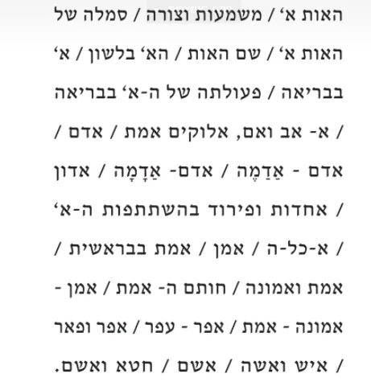
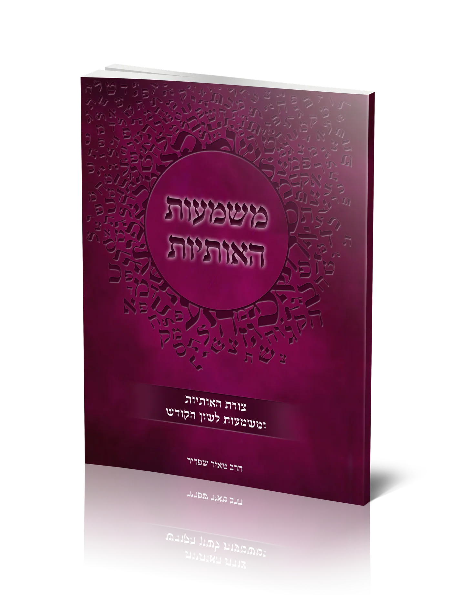
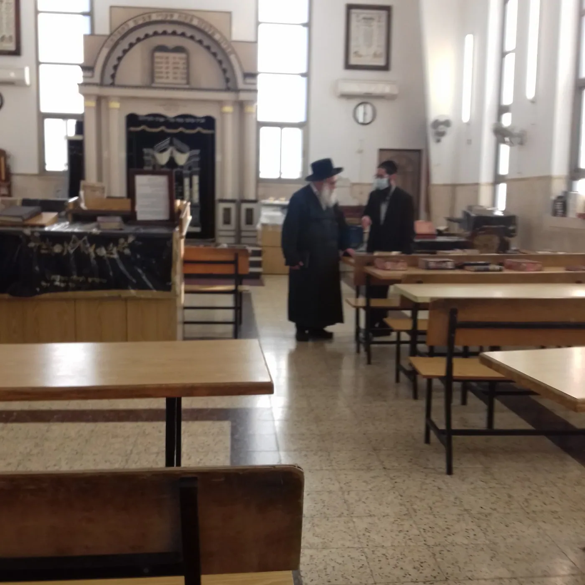

צורת האותיות ומשמעות לשון הקודש
הרב מאיר שפריר
משמעות האות א' והאות ב' - מתוך תורתו של סבינו ר' מאיר שפריר
מבנה האות, צורת האות, סמל האות, שם האות, פעולתה בבריאה ועוד


ניתן לקנות בכריכה רכה ובכריכה קשה
לחץ כאן לראות את הפתיחה וההקדמה

האדמו"ר ממאקווא שליט"א ביחד עם אחד הנכדים בנוגע לחיבור חשוב זה, לו נתן הסכמה נפלאה מאוד.
ניתן לראות כאן את ההסכמה כאן ניתן לראות דברים שנאמרו בהספד בלוויה על ידי האדמו''ר שליט''א.
ניתן לראות כאן את כל הספר
כריכה רכה - כולל משלוח עד הבית - 20 ש''ח .
לחץ כאן לתשלום מאובטח בכרטיס אשראי ולמילוי פרטי משלוח
כריכה קשה - כולל משלוח עד הבית - 40 ש''ח
לחץ כאן לתשלום מאובטח בכרטיס אשראי ולמילוי פרטי משלוח
בנוסף זכינו לכתוב את סיפור עלייתו של ר' מאיר שפריר לארץ ישראל, כפי שהוא כתבו מיד אחר עליתו ארצה
בתוך הספר לכו נרננה - ניתן לראות ולהזמין כאן
כמו כן יצא לאור ספר על מצוות נטיעת אילנות בארץ ישראל לע''נ ר' מאיר שפריר ז''ל
שכל חייו אהב מאוד את העצים והחקלאות בארץ הקודש